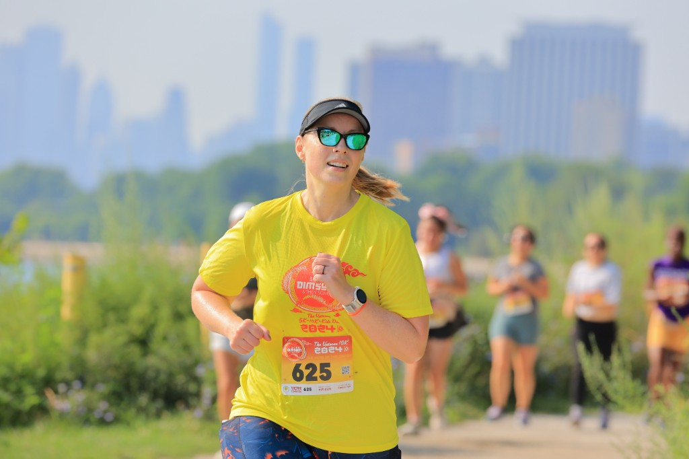
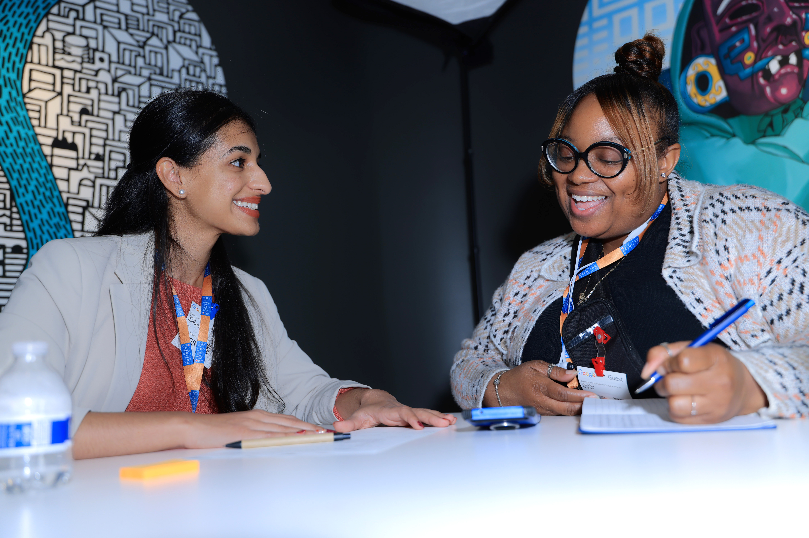
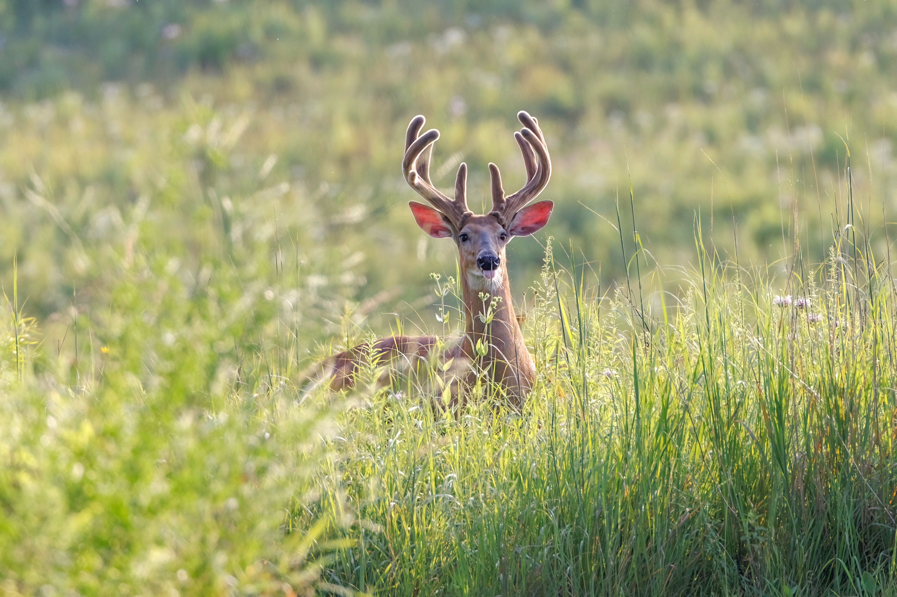
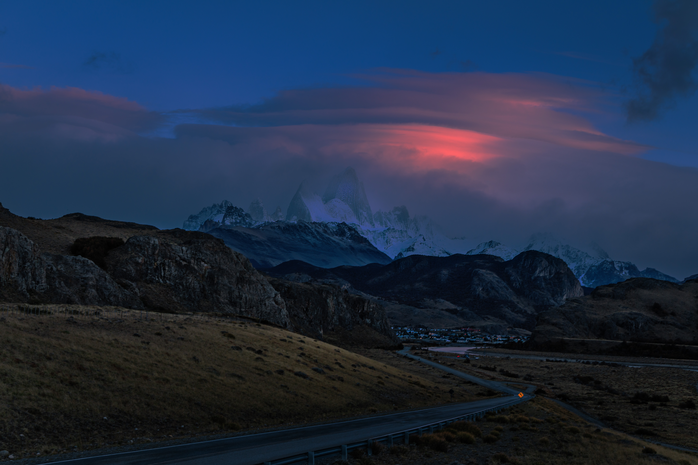

I BELIEVE THAT EVERY PHOTOGRAPH HAS THE POWER TO PRESERVE A MOMENT IN TIME.
I have been volunteering as an event photographer for many years, capturing community events such as running races, triathlons, basketball games, family celebrations, gatherings with friends, and music concerts. Over the past four years, I have also worked as a professional photographer. As a member of Purple Photos Group, I have photographed a wide variety of events throughout the Chicagoland area. My journey from volunteer photographer to professional has reinforced my belief that photography has always been more than just a job—it is a passion and a way of preserving life’s meaningful moments. I believe that every photograph has the power to preserve a moment in time, creating a lasting collection of memories that becomes part of our shared history.
My professional focus is event photography. Over the past four years with Purple Photos Group, I have photographed conferences, corporate celebrations, golf outings, graduations, and professional headshots for clients throughout the Chicagoland area. I enjoy capturing genuine emotions and the special moments that make every event unique.
Outside of my professional work, I am passionate about wildlife and landscape photography. Through my lens, I hope to help people appreciate the beauty of the world around them while documenting meaningful moments—both big and small—that connect people with their loved ones.
Friends and clients describe me as easy-going, approachable, and genuinely enjoyable to work with. Whether I am capturing the excitement of a special event or the unique character of a wild animal, I strive to present every subject with authenticity and respect, allowing its true story to shine through.


01
description of first photo

02
description of the photo

03
description of the photo

04
description of the photo

05
description of the photo

06
description of the photo
(847) 691-9539
yuno9539
yoldshue@gmail.com